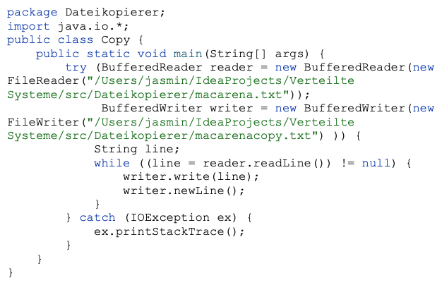
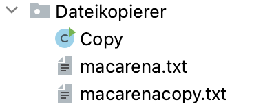
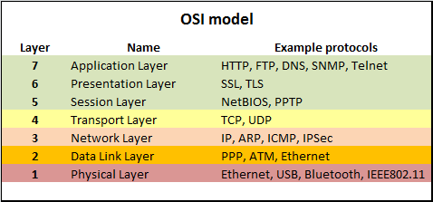

Die zweite Vorlesung
Übung Dateikopierer
Relativ zu Beginn der Vorlesung haben wir eine „Kopierer“ Klasse erstellt, die eine gegebene Datei einliest, den Inhalt kopiert und eine weitere Kopier-Datei erstellt und dort den Inhalt einfügt.
Unten sieht man auch, wie das Ergebnis im gleichen Verzeichnis aussieht und ja, der Inhalt ist identisch.


Java.io File
Die java.io File Klasse ist eine Klasse in der Java-Standardbibliothek. Man kann mit ihrer Hilfe Dateien und Verzeichnisse verarbeiten und darstellen, unter anderem kann man Dateien und Verzeichnisse erstellen, löschen, verschieben und durchsuchen. Die Klasse ist weit verbreitet und die Grundlage für „Dateioperationen“, also um mit Dateien zu interagieren.
Reader & Writer
Um Textdateien in Java einzulesen und zu schreiben, gibt es die Reader und Writer. So sehen sie aus:
objectOutputStream.writeObject(MeineDatei);
fileWriter.write("Mein Text");
Hier brauchen wir aber try-catch Block, weil es immer eine IOException geben kann. Das sieht so aus:
try {
FileWriter writer = new FileWriter("helloworld.txt"); Der Filewriter ist aus java.io
writer.write("Hallo Welt");
writer.close();
}catch (IOException ex){
ex.printStackTrace();
Server
Zum Aufbau einer Verbindung zwischen einem Client und Server muss der Client den Server kennen und der Server muss alle Clients kennen, die sich mit ihm verbinden. Hierzu werden TCP/IP Sockets verwendet. Diese sorgen dafür, dass eine Verbindung hergestellt wird.
Die Verbindung zwischen Client und Server fundiert auf den IP-Adressen und den Port-Nummern. Ports sind sozusagen Datentüren beim Rechner und viele davon sind schon belegt. Später müssen wir bestimmte Port-Nummern angeben, um eine Verbindung zu erstellen, damit wir unseren Client und unseren Server zusammen nutzen / verbinden können.
TCP/IP Protokolle
TCP und IP sind Protokolle, die den Datenaustausch ermöglichen.
Das IP Protokoll weist jedem Gerät eine eindeutige IP-Adresse zu und ermöglicht dadurch die Weiterleitung von Datenpaketen vom Sender zum Empfänger.
Das TCP Protokoll ist ein zuverlässiges Übertragungsprotokoll, dass auf IP aufbaut. Hier wird sichergestellt, dass die Datenpakete in richtiger Reihenfolge ankommen, dass sie fehlerfrei sind und keine Paketverluste auftreten. Die Daten werden zuverlässig übertragen und der Empfang (vom Empfänger) bestätigt.
Zusammen sind sie grundlegende Protokolle für den Datenaustausch im Internet. Hier kann man die Protokolle auf den verschiedenen Ebenen des OSI-Modells sehen.

Port-Mapping
Bei Port-Mapping geht es darum, Netzwerkverbindungen von einem externen Netzwerk auf bestimmte Geräte (oder Dienste) in einem internen Netzwerk weiterzuleiten. Externe Nutzer können so auf Webserver zugreifen, indem die Verbindungen vom Router an die Geräte weitergeleitet werden.
Ergo: Da es interne und externe Ports gibt, entscheidet der Router, was wohin gehört.